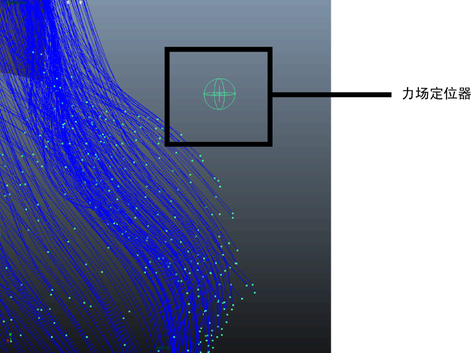

可以创建“力场”(Force Field)约束，以在具有球形体积边界的径向场中推动 nHair 曲线 CV 远离约束的中心。例如，可以向外推特定的头发曲线，为头发样式创建基本形状。
创建“力场”(Force Field)约束
- 在场景视图中，选择要约束的头发曲线 CV。请参见选择用于 nConstraint 的曲线组件。
- 在 FX 菜单集中，选择。
“力场”(Force Field)定位器将显示在选定头发曲线的旁边，而 dynamicConstraint 节点将显示在“属性编辑器”(Attribute Editor)中。

- 使用 Maya 的“移动”(Move)、“旋转”(Rotate)和“缩放”(Scale)工具调整“力场”(Force Field)约束的位置、大小和旋转。
定位器的位置、大小和旋转决定力场约束的大小、形状和体积。
- （可选）调整 dynamicConstraint 节点上的“力”(Force)、“强度”(Strength)和“强度衰减”(Strength Dropoff)属性，以确定力场的强度。正值会使力场向外推头发曲线，而负值会使力场向内吸头发曲线。